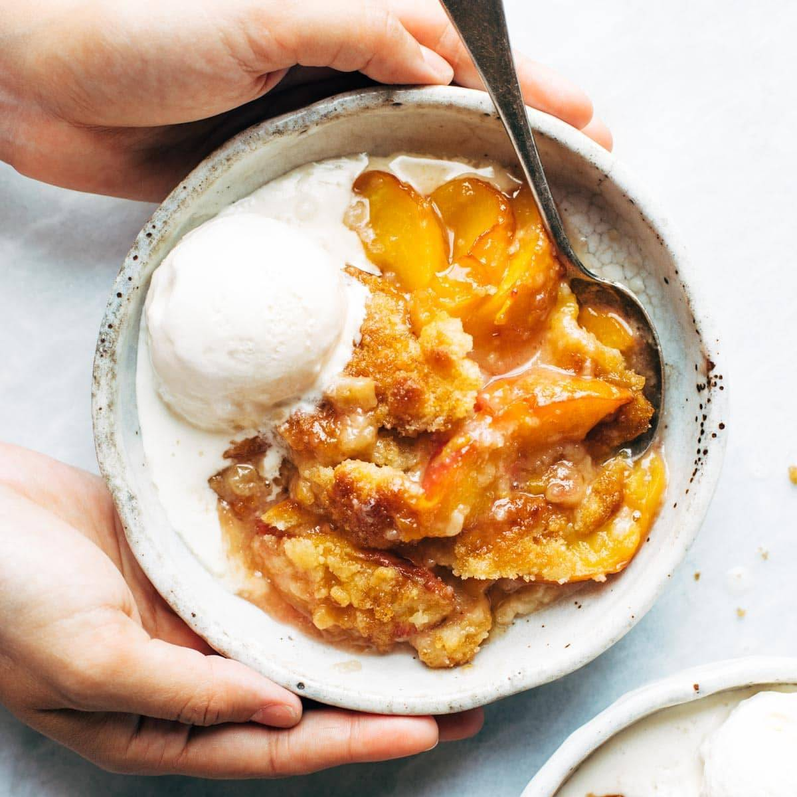

Mom's Peach Cobbler

This is my mom's peach cobbler. While she has not made this as much recently,
this is a childhood favorite of mine. This is best served hot with a side of vanilla
ice cream.
Ingredients: (These Serve as Placeholders)
5-6 large ripe peaches (about 5 cups), peeled, pitted, and sliced
1 teaspoon ground cinnamon
1 teaspoon vanilla extract
2 teaspoons cornstarch (for thickening)
6 tablespoons unsalted butter, cold and cubed
Steps: (These Serve as Placeholders)
Preheat your oven to 350°F (175°C).
Peel and slice the peaches into 1/4-inch thick slices.
Combine the sliced peaches with ¾ cup granulated sugar, ¼ cup
brown sugar, 1 teaspoon cinnamon, ¼ teaspoon nutmeg, 1 tablespoon lemon juice, and
2 teaspoons cornstarch.
Please visit ChatGPT for the remainder of the instructions.
Home